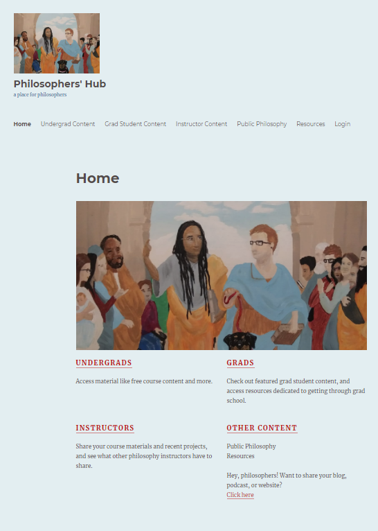
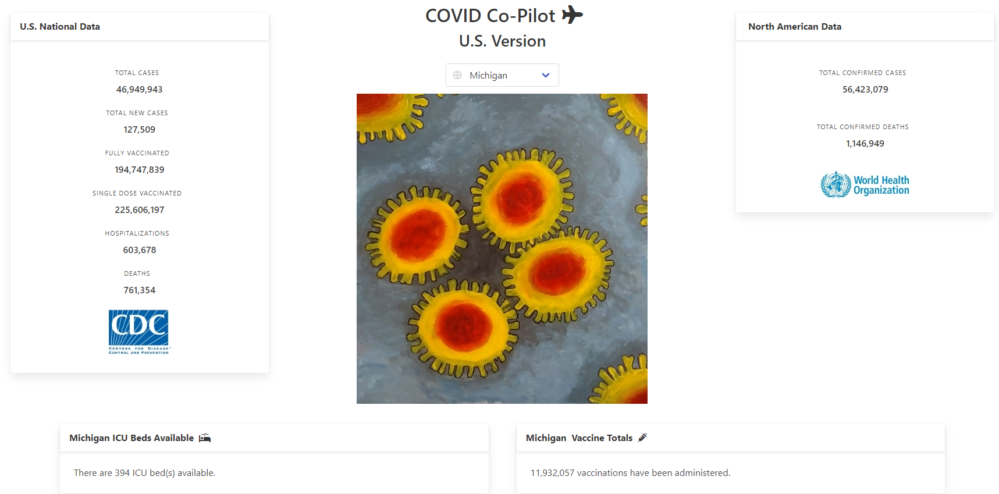
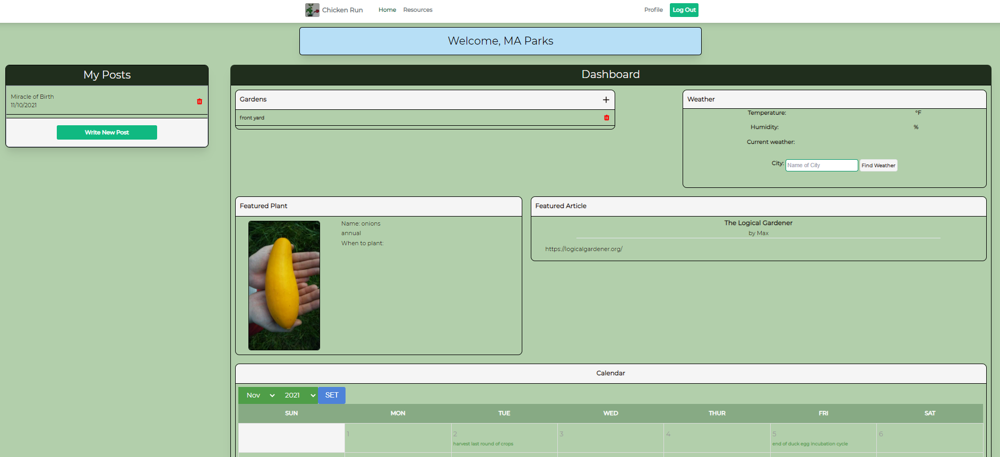
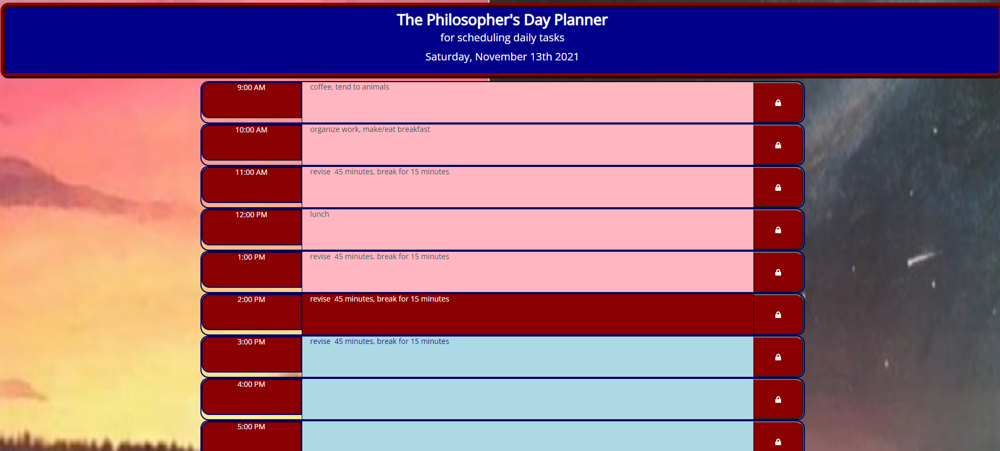

About Max
M. A. Parks (preferred name 'Max', legal name 'Megan') is currently a PhD Candidate in the Philosophy Department at the University of California, Davis, while simultaneously working through a coding/web development program through Michigan State University.
Max's previous education includes a B.A. in psychology and philosophy from the University of Michigan, Flint (2014), and an M.A. in philosophy from Wayne State University (2016).
Personal Statement
I am a front-end web developer leveraging an extensive philosophy and psychology background to build a more intuitive user experience on the web. I’m currently working toward a certificate in full stack development from Michigan State University with newly developed skills in a variety of technologies and languages. I’m known as an innovative problem solver passionate about web development, with a focus on accessibility.
With each project, my aim is to best engage my audience for an impactful user experience. For example, I recently worked on a team of four to develop a single-page COVID-19 informational app that helps individuals in the COVID-19 pandemic access reliable information about national, continental, and state data. I also worked as part of a team to create a full-stack web application which allows users to track various farm activities and plant, animal, and weather information. I’m looking forward to using my skills as part of a fast-paced, quality-driven team to build better experiences on the web. I’m looking to collaborate on website development and other projects to improve my skillset.
Resume
Contact Max
Email: maxaeonparks@gmail.com
Phone: 810-429-0508
Max's LinkedIn Profile
Max's Github
Max's Portfolio
Max's Personal Website
Philosophers' Hub
a place for philosophers from all walks of life

deployed application
Github repository
COVID Co-Pilot
Our application is designed to provide COVID-19 information to users in an easy-to-access manner. Whereas most informational apps about COVID-19 display an overwhelming amount of information organized in a less-than-ideal fashion, our site is designed with the user in mind, so statistics about national and continental data is easily identifiable, and with a click of the mouse, users can access COVID-19 data specifically about their selected state.

deployed application
Github repository
Chicken Run
The project will allow users to register for an account, access information about various plants and animals, add information to this database, as well as organize their farming activities in a calendar.

deployed application
Github repository
Schedule Builder
This is a daily schedule that allows users to save their inputs. The schedule is color-coded to easily show users what the current block of time is, as well as past and future times.

deployed application
Github Repository